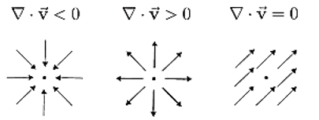

In a rotating frame of reference and in the absence of sources and sinks
of mass or salt the Navier-Stokes equations are
\[
\begin{aligned}
& u_t + \vec{u} \cdot \nabla u - fv = -\frac{1}{\rho_0} p_x + k \nabla^2 u + F^x \quad \text{(top/bottom)} \\
& v_t + \vec{u} \cdot \nabla v + fu = -\frac{1}{\rho_0} p_y + k \nabla^2 v + F^y \quad \text{(top/bottom)} \\
& 0 = -\frac{1}{\rho} p_z + g \quad \text{(hydrostatic approximation, } g \gg w_t\text{)} \\
& u_x + v_y + w_z = \nabla \cdot \vec{u} = 0 \quad \text{(water is almost incompressible)} \\
& T_t + \vec{u} \cdot \nabla T = k \nabla^2 T + H \quad \text{(heating/cooling)} \\
& S_t + \vec{u} \cdot \nabla S = k \nabla^2 S + S \quad \text{(rain/evaporation)} \\
& \rho = f(T, S, p) \approx \rho_0 (1 - \alpha T + \beta S)
\end{aligned}
\]
- 
- Reynolds averaging has been done already, and k is turbulent diffusivity
- \(f = 2\Omega \sin\Theta, \text{ where } \Omega = \frac{2\pi}{86400 \, \text{s}} \text{ and } \Theta \text{ is latitude}\)
- For now, we avoid using the spherical coordinate system, so we use Taylor \( f(x) \approx f(x_0) + f'(x_0)\Delta x \) to approximate f:
\(f = 2\Omega \sin\theta \approx 2\Omega \left( \sin\Theta_0 + \frac{1}{R} \cos\Theta_0 \, \Delta \Theta \right) \Delta R = f_0 + \beta y\)